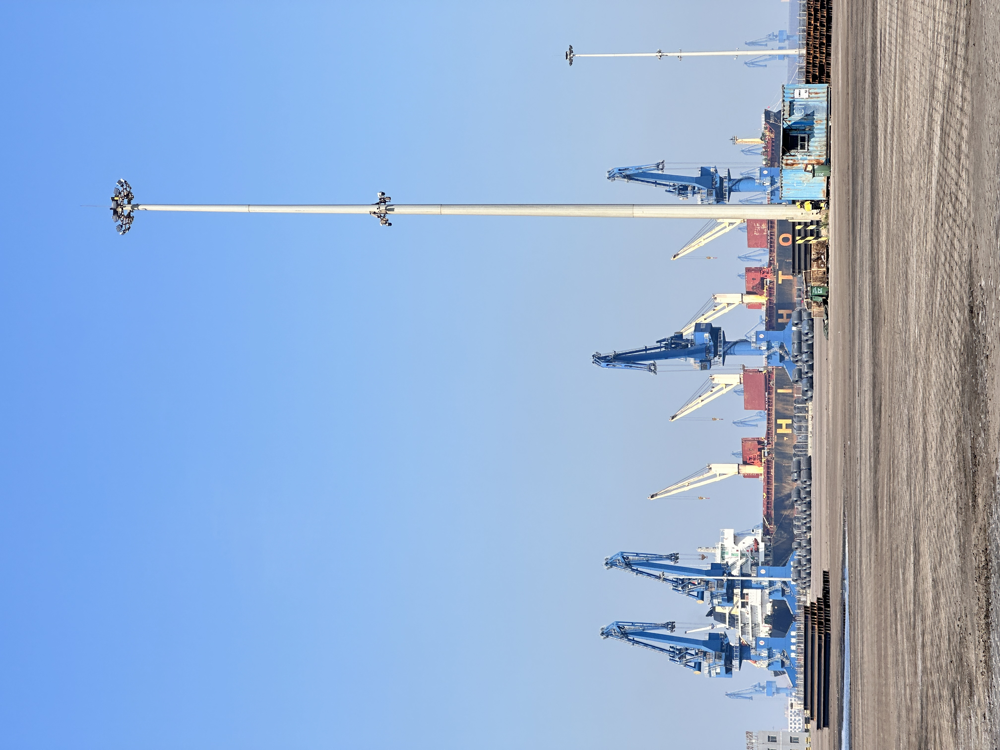

$96B Global Cement Investment Wave and India’s Blended Cement Shift: What It Means for Slag Suppliers
Global cement and lime manufacturers are planning $96 billion in investments, with $23 billion expected to break ground in 2026. At the same time, India is pushing blended cement usage to 55–70%. Together, these signals point to a structural demand increase for supplementary cementitious materials like GBFS.
全球水泥投资浪潮 960 亿美元与印度掺配水泥转型：对矿渣供应商意味着什么
全球水泥与石灰生产商正计划 960 亿美元投资，其中 230 亿美元预计将在 2026 年内开工。与此同时，印度正将掺配水泥使用率推向 55–70%。这两大信号共同指向对 GBFS 等补充胶凝材料的结构性需求增长。

Two major industry signals converged this week. On the investment side, global cement and lime manufacturers have announced plans for roughly $96 billion in capital deployment, with Industrial Info Resources estimating that up to $23 billion worth of projects could begin construction in the remainder of 2026 alone. On the demand side, India’s cement industry is accelerating its shift toward blended formulations, with blended cement usage now reaching 55–70% in many markets ahead of World of Concrete India 2026. For suppliers of ground granulated blast furnace slag and other supplementary cementitious materials, the combination of massive capital inflows and regulatory-driven blending ratios is creating a clear, structural demand pull.
1. $96 billion in capital is not just a headline—it is a raw-material commitment
When an industry commits $96 billion to new capacity, terminals, kilns and grinding infrastructure, it is effectively pre-ordering the raw materials needed to feed that capacity. Cement and lime projects under construction in 2026 will require clinker, limestone, gypsum, fuel—and increasingly, supplementary cementitious materials to meet lower-carbon product specifications and cost targets. The near-term figure of $23 billion in expected 2026 starts is especially relevant: these are not distant five-year plans, but projects moving into physical execution now. That means procurement teams are already tendering for long-term slag, fly ash and pozzolan supply. For international traders, this is the window when early relationships and trial shipments convert into structured offtake agreements.

2. India’s blended cement push is a demand-side accelerator with global relevance
India is not merely experimenting with blended cement. Industry leaders ahead of World of Concrete India 2026 confirmed that 55–70% blended cement usage is already a reality in many Indian markets, driven by both regulatory frameworks and the economic logic of clinker reduction. The PMAY (Pradhan Mantri Awas Yojana) initiative and broader infrastructure expansion beyond tier-1 cities are creating volume growth that requires cost-efficient, lower-carbon cement. For GBFS suppliers, India represents one of the largest and fastest-growing blended cement markets in the world. The country’s domestic slag output, while significant, is not always available in the consistent quality and volume required by major cement producers—creating an opening for imports from established metallurgical regions.

3. For SENLAN and Asian suppliers, the message is timing and scale
SENLAN Trading operates from Tangshan Caofeidian with direct port access and the ability to supply consistent, bulk-quality GBFS and GGBFS. The current market dynamic—$96 billion in global investment plus India’s structural blending shift—creates a dual opportunity. First, new cement capacity under construction needs feedstock now, not in five years. Second, India’s blended cement acceleration requires reliable, large-scale SCM supply that can meet technical specifications without disrupting plant operations. Suppliers who can combine material quality with port-side loading discipline and predictable documentation are likely to find their relevance rising in markets that previously seemed distant. The question for exporters is no longer whether demand exists, but whether their supply chain can scale to meet it.
The near-term capital surge and the regional blending momentum may look like separate stories, but they share a common thread: cement producers are scaling capacity while simultaneously lowering their clinker dependence. That combination requires more supplementary cementitious materials, more reliable supply chains, and more disciplined execution from raw material suppliers. For companies positioned at the intersection of quality, volume and port logistics, the current signals point to a sustained demand cycle rather than a temporary spike.
本周，两大行业信号交汇。投资端，全球水泥与石灰生产商已宣布约 960 亿美元的资本部署计划，据 Industrial Info Resources 估计，仅 2026 年下半年就可能有多达 230 亿美元的项目破土动工。需求端，印度水泥行业正在加速向掺配配方转型，在 2026 年印度混凝土世界博览会前夕，多地掺配水泥使用率已达到 55–70%。对磨细高炉矿渣粉及其他补充胶凝材料供应商而言，巨额资本流入与监管驱动的掺配比例提升，正在形成清晰而结构性的需求拉动。
1. 960 亿美元资本部署不只是头条，更是一份原材料承诺
当一个行业承诺投入 960 亿美元建设新产能、码头、窑炉与粉磨基础设施时，它实际上是在提前预订支撑这些产能所需的原材料。2026 年正在推进的水泥与石灰项目将需要熟料、石灰石、石膏、燃料——并且越来越需要补充胶凝材料，以满足更低碳的产品规格和成本目标。其中，预计将在 2026 年内开工的 230 亿美元项目尤其值得关注：这些并非遥远的五年规划，而是正在进入实体执行阶段的项目。这意味着采购团队已经开始为长期的矿渣、粉煤灰及火山灰供应进行招标。对国际贸易商而言，这正是早期关系与试单发货转化为结构性承购协议的关键窗口。
2. 印度掺配水泥转型是具有全球意义的需求端加速器
印度并非只是在试验掺配水泥。在 2026 年印度混凝土世界博览会前，行业领袖确认，受监管框架与熟料减量经济性双重驱动，55–70% 的掺配水泥使用率已在印度多地成为现实。PMAY（经济适用房）计划以及超越一线城市的更广泛基础设施扩张，正在创造需要成本更低、碳排放更少水泥的增量需求。对 GBFS 供应商而言，印度是全球最大、增长最快的掺配水泥市场之一。该国本土矿渣产出虽然可观，却未必总能为大型水泥生产商提供所需的一致品质与规模——这为来自成熟冶金地区的进口创造了机会。
3. 对森蓝及亚洲供应商而言，信息在于时机与规模
森蓝贸易在唐山曹妃甸运营，拥有直通港口的优势，能够供应品质稳定、大宗规格的 GBFS 与 GGBFS。当前的市场动态——960 亿美元全球投资加上印度结构性的掺配转型——创造了双重机遇。第一，正在建设中的水泥新产能需要的是当下、而非五年后的原料供给。第二，印度掺配水泥的加速推进，需要能够符合技术规格、同时不干扰工厂运行的可靠大规模 SCM 供应。那些能将材料品质与港侧装运纪律、可预期的单证服务结合起来的供应商，有望在以往看似遥远的市场中提升自己的相关性。对出口商而言，问题已不再是需求是否存在，而是供应链能否扩产以满足需求。
短期的资本 surge 与区域掺配 momentum 看似是两件事，但它们有一条共同主线：水泥生产商正在扩大产能，同时降低对熟料的依赖。这种组合需要更多的补充胶凝材料、更可靠的供应链，以及原材料供应商更具纪律的执行。对于那些兼具品质、规模与港口物流优势的公司而言，当前信号指向的是一个持续的需求周期，而非短暂的 spikes。
Explore products or discuss your inquiry.
If this market signal is relevant to your sourcing plan, you can review our core product pages or contact us with laycan, quantity, target specification and loading method.
Request a quote